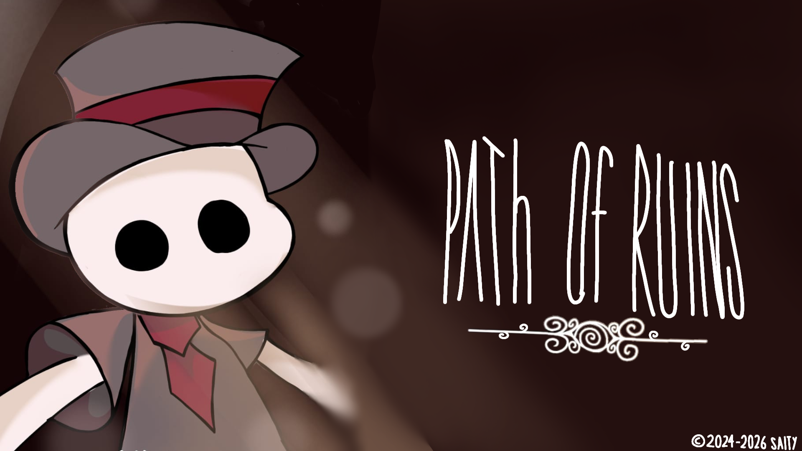

Apoiar Path of ruins

Entre traumas e ilusões voce é a pior parte da vida de alguem, apoie este jogo indie!
Path of ruins Campanha
Ajude este jogo indie!
Este projeto arrecadou 13% de R$10.300 faltam apenas 27 dias!

Em um mundo pós catástrofe você acorda, parece um mundo desconhecido e esquecido, mal sabe que você é a pior parte da vida de alguém, em Path of ruins veja acontecer, decida o certo, será que você será capaz de mostrar a sua personificação até o fim ou apenas um desconhecido neste vasto mundo em ruínas?